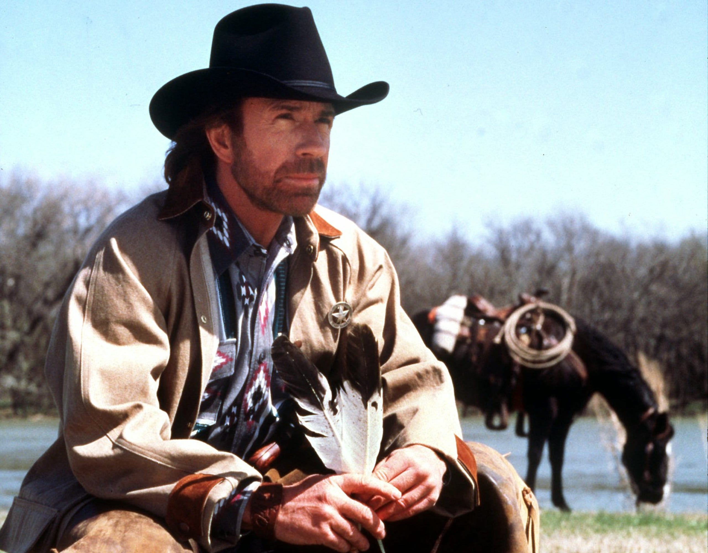

Number Fact / Chuck Norris Jokes
Descriptions
-
AJAX FACTS & JOKES - This program relies on AJAX to call different facts and
jokes from external sources. Through an event-listener, the AJAX methods fetch API data
from external websites, display a "Waiting for response..." message, and then return
one of two results: 1) an error message indicating what error occurred, or 2) a random
string called from the external website.
-
If a fact is returned from the Number Facts API, the response is returned as a string
of text.
-
If a joke is returned from the Chuck Norris API, the response is returned as a JSON
string.
This Week's Highlights
